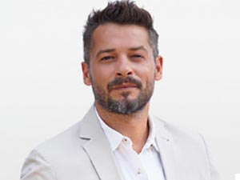

Art is a form of creative expression that allows us to convey our emotions, thoughts, and ideas in a way that words cannot. It is a way of communicating that transcends language and cultural barriers, connecting people from different walks of life. Art encompasses various forms such as painting, sculpture, music, literature, and dance, among others. It inspires, moves, and transforms us, making life more beautiful and meaningful.
Architecture is the art and science of designing and constructing buildings, structures, and spaces. It is an essential part of our built environment, shaping the way we interact with our surroundings. Architecture can be a reflection of the society, culture, and values of a particular time and place. It can also have a significant impact on our health, well-being, and quality of life. Good architecture considers the needs of the people who will inhabit the spaces, creating environments that are functional, sustainable, and aesthetically pleasing.
Meet a few of the Architects that are part of our family.
SERKAN BOLAT
CEO, ArtLife Architectures
Dedicated and committed to his work with utmost passion, Serkan has achieved milestones in his architectural career and has received many awards in Turkey. Graduated from Italian School of Architecture, he aims to bring out the best with his strokes at the same time manage projects and finances through his managerial skills.
EDA YILDIZ
Landscape Architect
With the love for nature, she showcases out landscape architectural designs at its best considering dimensions, beauty, and definelty make you feel connected with nature. Awarded with multiple times around Turkey, she's one of the first Turkish architects to collab on a Italian landscaping project.

Engin Segzin
Business Partner
He is as committed to his work as he is witty and playful in reality. Through his charm, he aims to fulfil clients needs on time and mediates between the client's requirements and designers thinking.